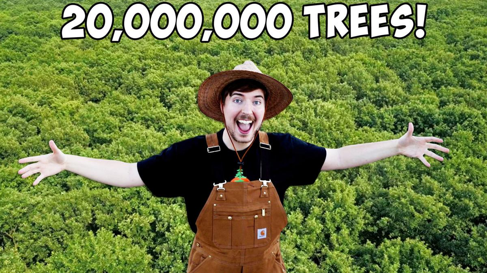
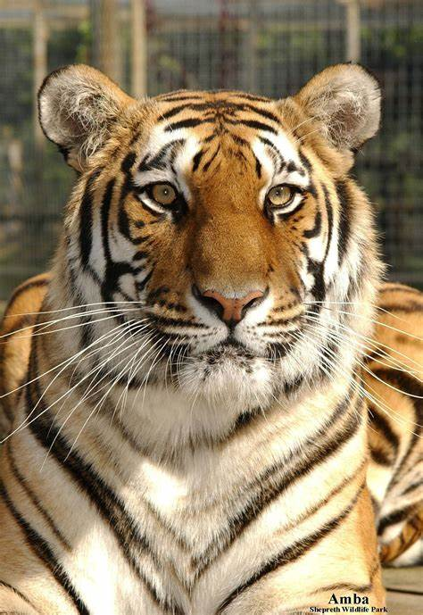
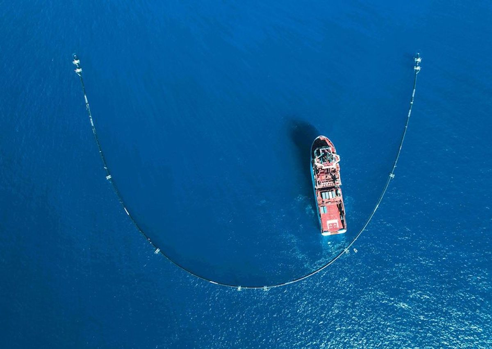

|  |
Ültessünk fát!
Amerikai videós "Mr. Beast" elhatározta, hogy ültet 20 millió fát.
Kezdeményezéséhez több ezren csatlakoztak világszerte.
Volt aki tevőlegesen, volt aki internetes adományokkal segítette az ügyet.
|
Védjük a tigriseket!
A bőrükért folyó orrvadászat indiában veszélyeztetett fajjá tette a tigriseket. A "Project tiger" már 1972 védi őket. A tigris-populáció 268-ról mára már 1498-ra növekedett! |
 |
|  |
Tartsuk tisztán vizeinket!
A "The Ocean Cleanup" névre hallgató Non-Profit alapítvány 2013 óta tisztítja az óceánokat. A céljuk az hogy az óceánban lévő szemét 90 százalékát feltakarítsák! Sőt! Oldalukon munkalehetőséget is ajánlanak a csatlakozni vágyóknak!
|